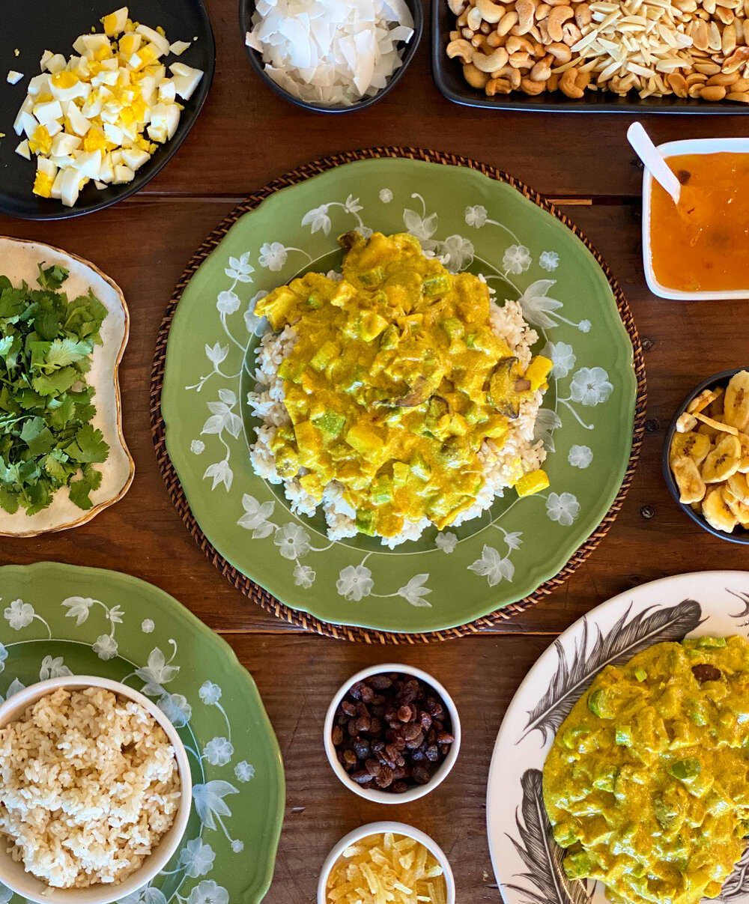

Curry Chicken

Description
While there is nothing traditional about this dish, this curry chicken recipe is still a great customizable crowd pleaser.
You may include any toppings you would like to have available for you, or your guests to make it just the way they want.
This recipe contains instructions for putting together the sauce base for the curry chicken. I reccommend serving it over
basmati rice, with toppings of your choice.
Some additions or toppings to consider include:
- Rasins
- Onions
- Shredded Cheese
- Bacon Bits
- Diced Eggs
- Mushrooms
- Green Peppers
- Olives
- Jalapenos
- Chutney
Ingredients
For Chicken Stock
- Chicken breast (at least 2 cups worth)
- 1/2 tsp Celery seed or celery salt
- 1/4 cup Parsley
- 1 Bay leaf
- 1 Small diced onion
For Sauce:
- 3 tbsp Butter
- 1/4 cup Minced onions
- 1 1/2 tbsp Curry powder
- 3 tbsp All-purpose flour
- 3/4 tsp Salt
- 1/2 tsp Ginger
- 1 cup Prepared chicken stock
- 1 cup Half & half
- 1/2 tsp Lemon juice
- 2 cups Cooked chicken breast (shredded or cut into bite-sized cubes)
Steps
- Bring a large pot to a boil, adding the chicken, celery (seed or salt), parsley, bay leaf, and onion. Boil for 15+ minutes, then remove chicken and reserve 1 cup of stock. Set aside.
- In a heavy sauce pan, saute onion and curry powder in butter.
- Turn heat down to low, and add in flour, salt, and ginger. Mix until smooth
- Remove from heat, and gradually stir in chicken stock and half & half.
- Return to medium heat, and while stiring constantly, bring to a boil, boiling for 1 minute. Cover and set aside.
- Once ready to serve, add in lemon juice and chicken, reheating slowly and throughly.
- Serve on top of rice with your choice of toppings.